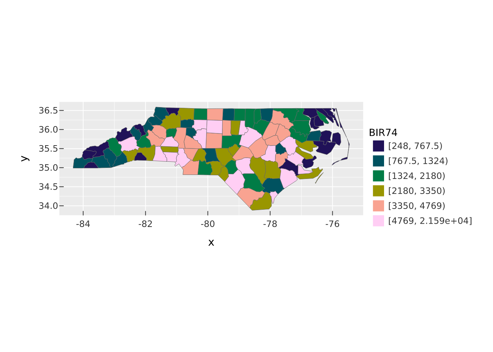
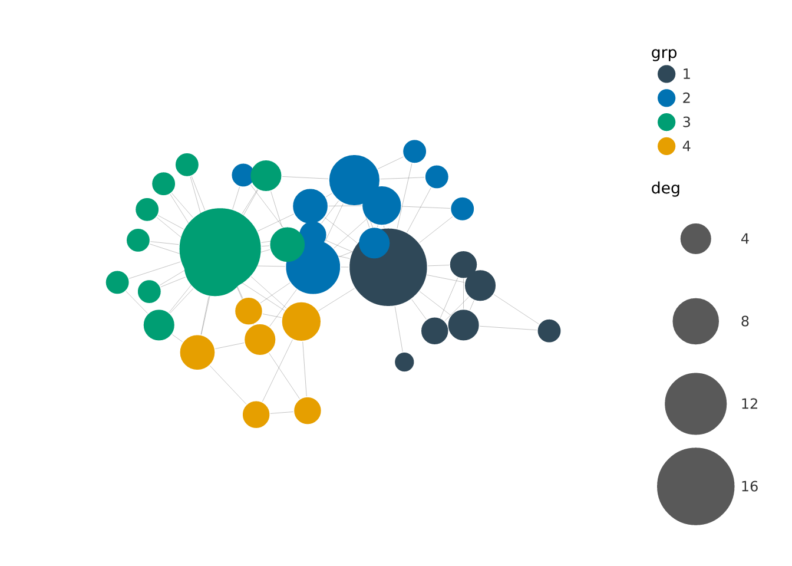
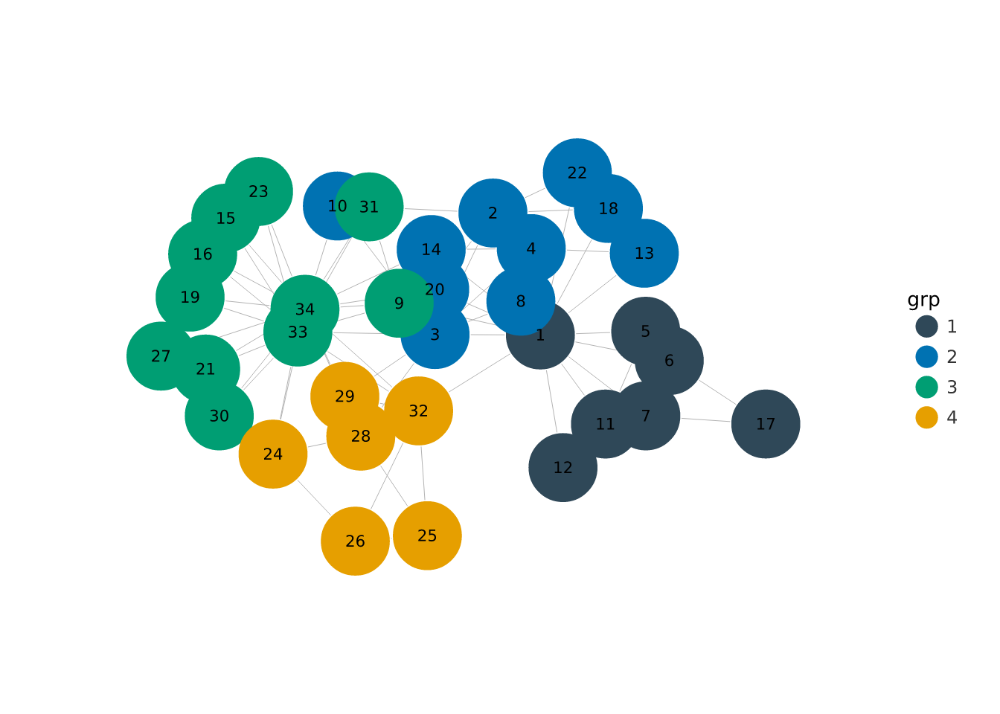
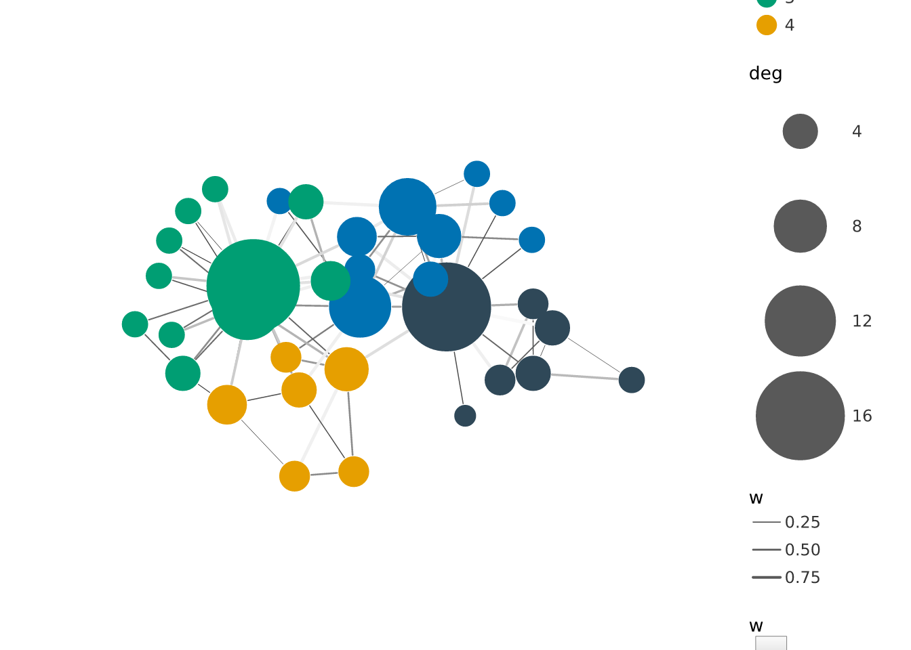
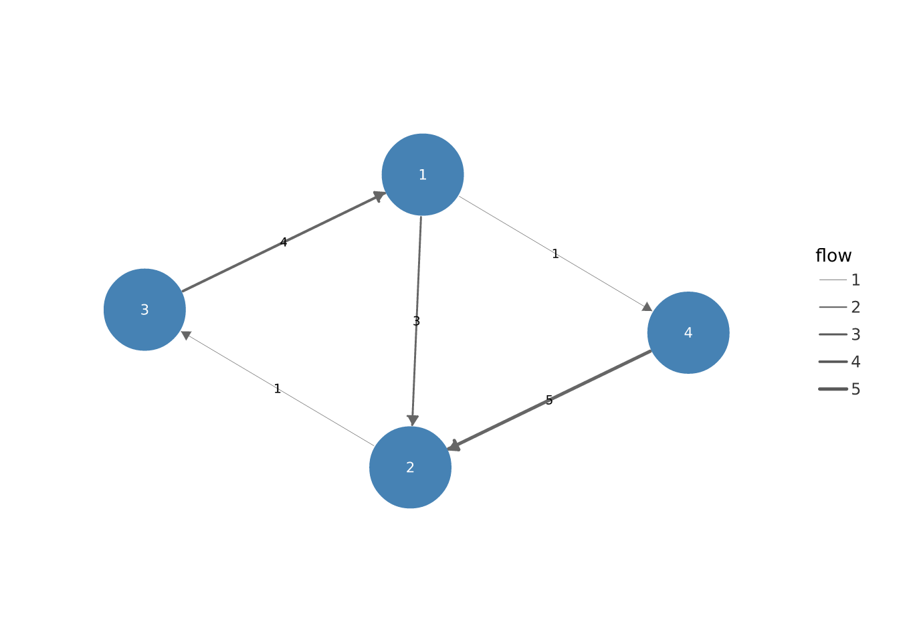
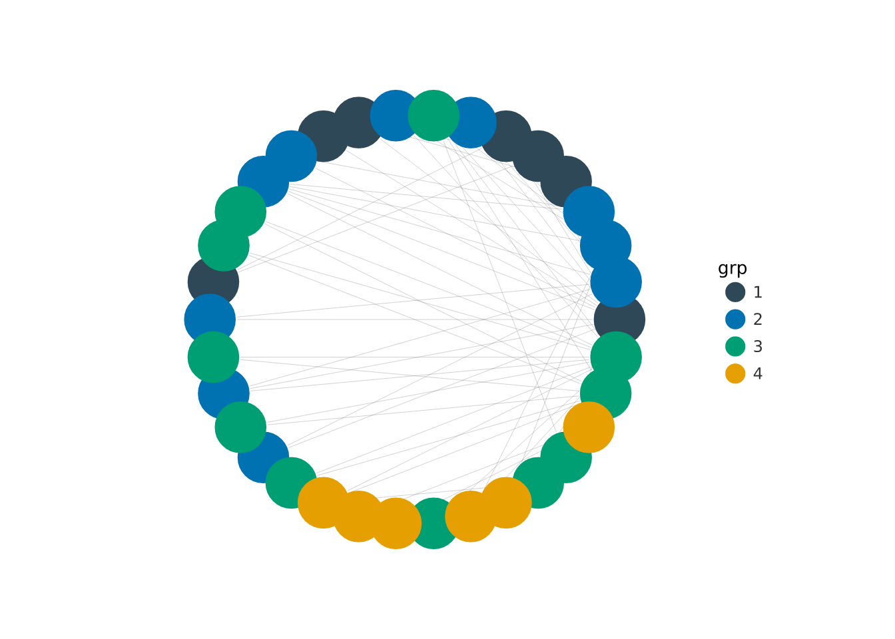

nc <- sf::st_read(system.file("shape/nc.shp", package = "sf"), quiet = TRUE)
vplot(nc) |>
mark_sf(fill = BIR74) |>
scale_fill_binned(style = "quantile", n = 6, palette = "Batlow") |>
coord_sf()
Most of vellumplot maps columns of a data frame to x and y. Two important data shapes do not fit that mould: spatial geometries, where the coordinates live in a geometry column and the aspect ratio matters, and graphs, where the positions have to be computed by a layout algorithm first. vellumplot handles both with the same grammar, through entry points suited to each data type.
mark_sf() draws the geometry column of an sf object. Points, lines, and polygons each render appropriately, and there are no x/y encodings: the coordinates come from the geometry. Other aesthetics map feature attributes as usual, so fill = AREA gives you a choropleth. Pair it with coord_sf(), which reprojects every layer to a common CRS before training and locks the map aspect ratio so nothing is stretched.
nc <- sf::st_read(system.file("shape/nc.shp", package = "sf"), quiet = TRUE)
vplot(nc) |>
mark_sf(fill = BIR74) |>
scale_fill_binned(style = "quantile", n = 6, palette = "Batlow") |>
coord_sf()
Because mark_sf() is an ordinary layer, you can stack it: draw a base layer of boundaries, then a second mark_sf() for highlighted features or point locations on top, and every layer reprojects together.
vgraph() starts a node-link diagram from an igraph graph. It runs a layout (stress majorization by default, via graphlayouts) and produces a spec whose node and edge tables already carry the x, y, xend, yend, and name columns the graph marks need. Then mark_edges() and mark_nodes() draw it. Draw order is fixed no matter how you pipe them: edges below nodes below labels.
g <- igraph::make_graph("Zachary")
g <- igraph::set_vertex_attr(
g, "grp",
value = as.factor(igraph::cluster_louvain(g)$membership)
)
g <- igraph::set_vertex_attr(g, "deg", value = igraph::degree(g))
vgraph(g, layout = "stress") |>
mark_edges(alpha = 0.4) |>
mark_nodes(size = deg, fill = grp) |>
scale_size(range = c(2, 9))
The node and edge aesthetics are the same ones you already know. mark_nodes() takes size, shape, fill, and color; mark_edges() takes color, linewidth, linetype, and alpha. mark_node_text() adds vertex labels.
vgraph(g, layout = "stress") |>
mark_edges(color = "grey70") |>
mark_nodes(fill = grp, size = 6) |>
mark_node_text(label = name, size = 8)
Edge colour, opacity, line type, and width train on their own scales – scale_edge_color(), scale_edge_alpha(), scale_edge_linetype(), and scale_edge_width() – separate from the node colour/alpha/linetype scales. So a figure can map node fill to a discrete community and edge colour to a continuous edge weight, and each gets its own legend instead of the two collapsing into one. Map an edge attribute to color and it is trained as an edge scale automatically; call scale_edge_color() to choose the palette.
g <- igraph::set_edge_attr(g, "w", value = runif(igraph::ecount(g)))
vgraph(g, layout = "stress") |>
mark_edges(color = w, linewidth = w) |>
mark_nodes(fill = grp, size = deg) |>
scale_edge_color(palette = "Grays") |>
scale_edge_width(range = c(0.3, 2.5)) |>
scale_size(range = c(2, 9))
For directed graphs, arrow = TRUE draws a closed arrowhead at each edge’s target end; edges are capped at the node boundary so the head is never buried under the marker. Pass a vellum::vl_arrow() for full control over the head (ends, type, length, angle). mark_edge_text() labels the edges at their midpoints, and angle = "along" rotates each label to follow its edge.
el <- matrix(c(1, 2, 2, 3, 3, 1, 1, 4, 4, 2), ncol = 2, byrow = TRUE)
d <- igraph::graph_from_edgelist(el, directed = TRUE)
d <- igraph::set_edge_attr(d, "flow", value = c(3, 1, 4, 1, 5))
vgraph(d, layout = "stress") |>
mark_edges(linewidth = flow, arrow = TRUE) |>
mark_nodes(size = 8, fill = "steelblue") |>
mark_edge_text(label = flow, size = 7) |>
mark_node_text(label = name, size = 8, color = "white") |>
scale_edge_width(range = c(0.4, 2.5))
layout accepts a name ("stress", "sparse_stress", "backbone", "fr", "kk", "circle", "tree", "sugiyama", and more), a supplied N-by-2 coordinate matrix, or a function that returns one. Stochastic layouts take a seed so the figure is reproducible.
vgraph(g, layout = "circle") |>
mark_edges(alpha = 0.3) |>
mark_nodes(fill = grp, size = 5)
Both of these are still ordinary specs. They face the same scales, themes, and composition tools as any other plot, and they render to a file with render_plot(). For per-feature interactivity (tooltips and data keys on map features or nodes), see the interactivity notes on mark_sf() and the mark reference pages.